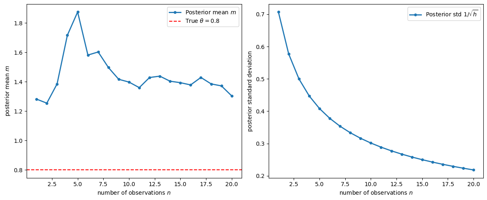
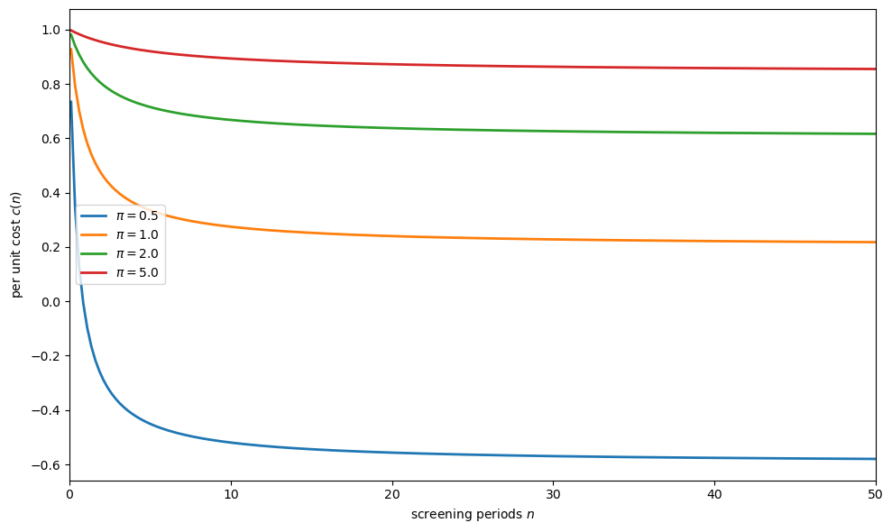
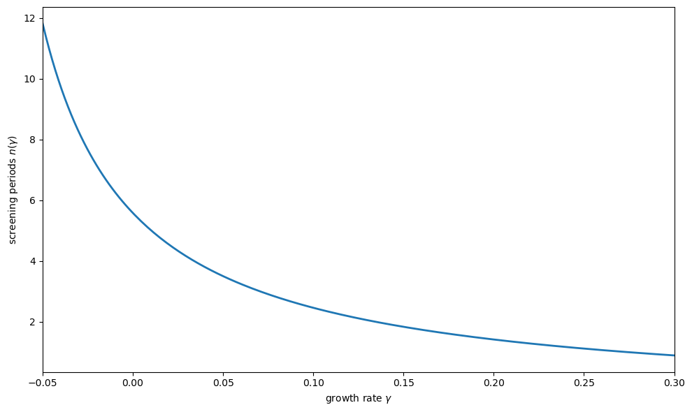
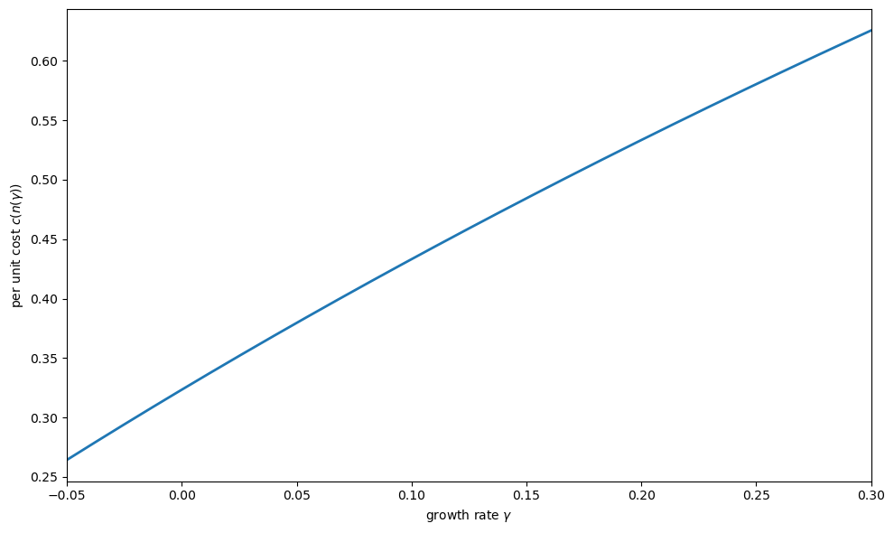
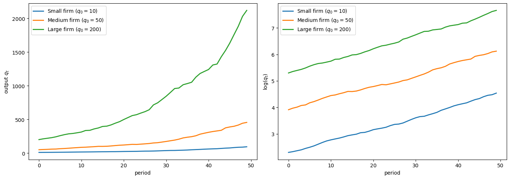
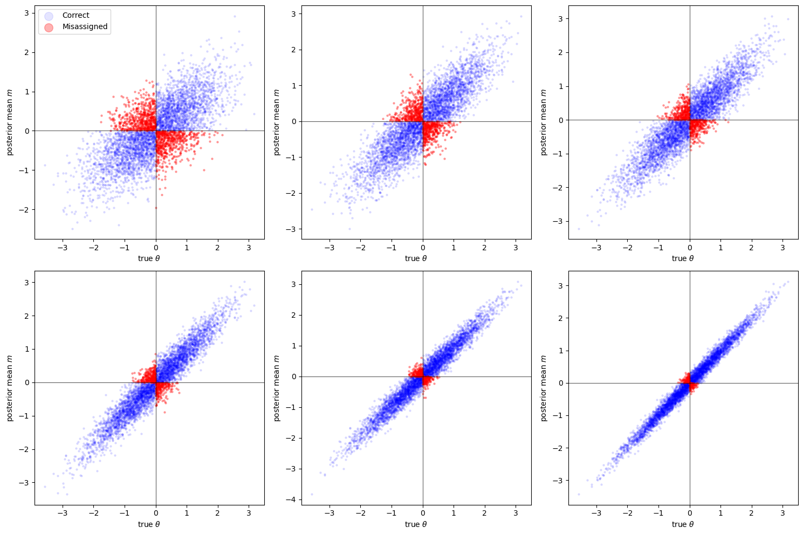
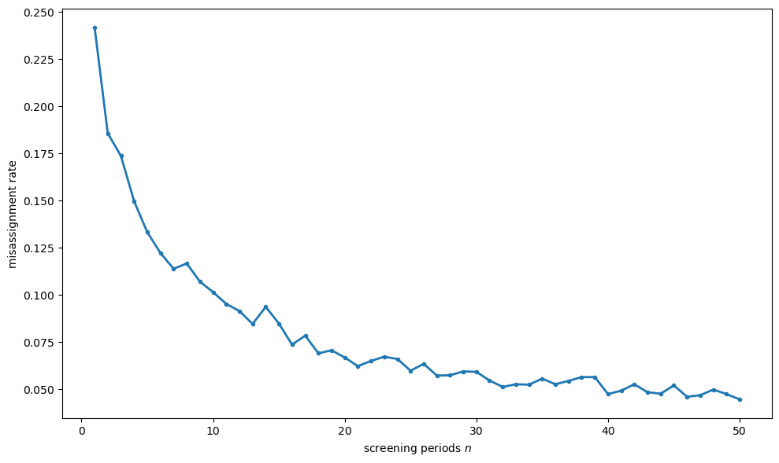
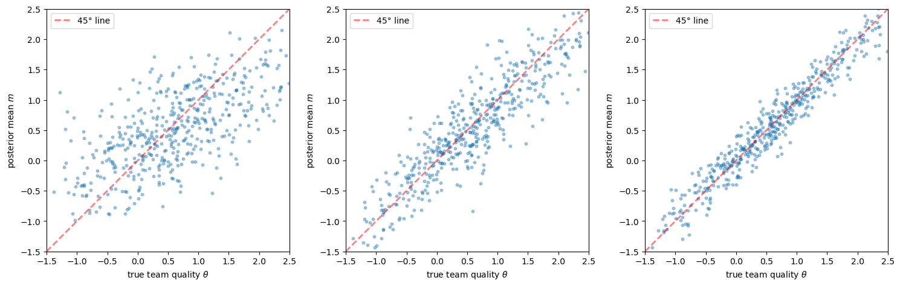
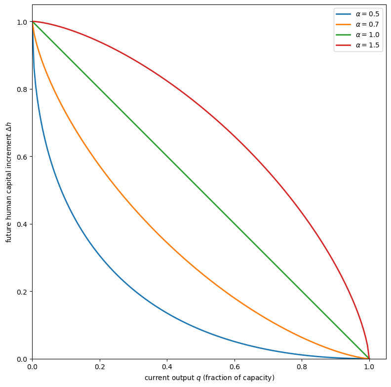
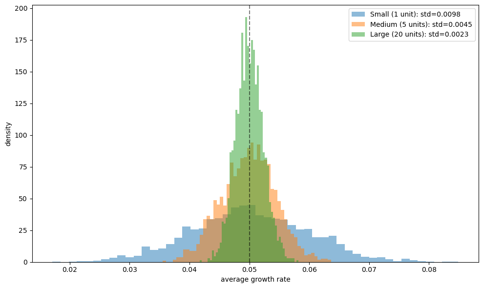

46. Organization Capital#
46.1. Overview#
This lecture describes a theory of organization capital proposed by Prescott and Visscher [1980].
Prescott and Visscher define organization capital as information that a firm accumulates about its employees, teams, and production processes.
This information is an asset to the firm because it affects the production possibility set and is produced jointly with output.
Costs of adjusting the stock of organization capital constrain the firm’s growth rate, providing an explanation for
why firm growth rates are independent of firm size (Gibrat’s Law)
why adjustment costs for rapid growth arise endogenously rather than being assumed
The paper offers three examples of organization capital:
Personnel information: knowledge about the match between workers and tasks
Team information: knowledge about how well groups of workers mesh
Firm-specific human capital: skills of employees enhanced by on-the-job training
In each case, the investment possibilities lead firms to grow at a common rate, yielding constant returns to scale together with increasing costs of rapid size adjustment.
Note
The theory is related to ideas of Coase [1937] and Williamson [1975] about the nature of the firm.
Prescott and Visscher stress the firm’s role as a storehouse of information and argue that incentives within the firm are created for efficient accumulation and use of that information.
Let’s start with some imports:
import numpy as np
import matplotlib.pyplot as plt
from scipy.stats import norm
from scipy.optimize import brentq
46.2. The basic idea#
The firm is a storehouse of information.
Within the firm, incentives are created for the efficient accumulation and use of that information.
Prescott and Visscher exploit this concept to explain certain facts about firm growth and size distribution.
The key insight: the process by which information is accumulated naturally leads to
constant returns to scale, and
increasing costs to rapid firm size adjustment
Constant returns to scale explain the absence of an observed unique optimum firm size (see Stigler [1958]).
Without costs of adjustment, the pattern of investment by firms in the face of a change in market demand would exhibit discontinuities we do not observe.
Further, without a cost penalty to rapid growth, the first firm to discover a previously untapped market would preempt competition by usurping all profitable investments as they appear, thus implying monopoly more prevalent than it is.
46.3. Personnel information as organization capital#
The first example of organization capital is information about the match between workers and tasks.
46.3.1. Setup#
Workers have different sets of skills and talents.
A variable \(\theta\) measures the aptitude of a worker for a particular kind of work.
Workers with high \(\theta\) have comparative advantage in tasks requiring repeated attention to detail
Workers with low \(\theta\) have comparative advantage in work requiring broadly defined duties
The population distribution of \(\theta\) is normal with mean zero and precision (inverse of variance) \(\pi\):
When a worker is hired from the labor pool, neither the worker nor the employer knows \(\theta\).
Both know only the population distribution.
46.3.2. Three tasks#
If \(q\) units of output are produced, assume:
\(\varphi_1 q\) workers are assigned to task 1 (screening)
\(\varphi q\) workers are assigned to task 2
the remaining workers are assigned to task 3
where \(\varphi_1 + 2\varphi = 1\).
Note
The fixed coefficients technology requires a constant ratio between the number of personnel in jobs 2 and 3 and the number assigned to job 1.
For task 1, the screening task, per unit cost of production is invariant to the \(\theta\)-values of the individuals assigned.
However, the larger a worker’s \(\theta\), the larger is his product in task 2 relative to his product in task 3.
Consequently:
a worker with a highly positive \(\theta\) is much better suited for task 2
a worker with a highly negative \(\theta\) is much better suited for task 3
46.3.3. Bayesian learning#
Performance in tasks 2 or 3 cannot be observed at the individual level.
But information about a worker’s \(\theta\)-value can be obtained from observing performance in task 1, the screening task.
The expert supervising the apprentice determines a value of \(z\) each period:
where \(\epsilon_{it} \sim N(0, 1)\) are independently distributed over both workers \(i\) and periods \(t\).
After \(n\) observations on a worker in the screening job, the posterior distribution of \(\theta\) is normal with
posterior mean:
posterior precision:
Knowledge of an individual is thus completely characterized by the pair \((m, h)\).
def bayesian_update(z_observations, prior_precision):
"""
Compute posterior mean and precision after observing signals.
"""
n = len(z_observations)
h = prior_precision + n
m = np.sum(z_observations) / h
return m, h
Let’s visualize how the posterior evolves as we observe a worker whose true \(\theta = 0.8\):
np.random.seed(0)
θ_true = 0.8
π = 1.0
T = 20
ε = np.random.randn(T)
z_signals = θ_true + ε
posterior_means = []
posterior_stds = []
for n in range(1, T + 1):
m, h = bayesian_update(z_signals[:n], π)
posterior_means.append(m)
posterior_stds.append(1 / np.sqrt(h))
fig, axes = plt.subplots(1, 2, figsize=(12, 5))
ax = axes[0]
ax.plot(range(1, T + 1), posterior_means, '-o', markersize=4, lw=2,
label='Posterior mean $m$')
ax.axhline(θ_true, color='r', linestyle='--',
label=fr'True $\theta = {θ_true}$')
ax.set_xlabel('number of observations $n$')
ax.set_ylabel('posterior mean $m$')
ax.legend()
ax = axes[1]
ax.plot(range(1, T + 1), posterior_stds, '-o', markersize=4, lw=2,
label=r'Posterior std $1/\sqrt{h}$')
ax.set_xlabel('number of observations $n$')
ax.set_ylabel('posterior standard deviation')
ax.legend()
plt.tight_layout()
plt.show()

Fig. 46.1 Posterior mean convergence and uncertainty#
As the number of screening observations \(n\) increases, the posterior mean converges to the true \(\theta\), and the posterior uncertainty shrinks at rate \(1/\sqrt{n}\).
46.3.4. Per unit costs of production#
Under the nonsequential assignment rule, employees with the greatest seniority are assigned to jobs 2 and 3, while newer employees remain in the screening task.
Workers with \(m > 0\) are assigned to task 2, and those with \(m \leq 0\) to task 3.
Per unit costs of production, assuming this assignment after \(n\) screening periods, are:
Because \(m\) is normally distributed, evaluation of the conditional expectation in (46.4) yields per unit costs as a function of \(n\):
where \(c = c_1 + c_2 + c_3\) and \(0.7978 = 2 \int_0^{\infty} \frac{t}{\sqrt{2\pi}} e^{-t^2/2} dt\).
Note
The constant \(0.7978 \approx \sqrt{2/\pi}\) is the mean of the standard half-normal distribution.
It arises from computing \(E[\theta \mid m > 0] - E[\theta \mid m \leq 0]\) for a normal distribution.
The function \(c(n)\) decreases at a decreasing rate in \(n\).
More screening observations reduce costs but with diminishing returns.
def cost_per_unit(n_vals, π, c_bar=1.0):
"""
Per unit cost as a function of screening periods n.
"""
n_vals = np.asarray(n_vals, dtype=float)
return c_bar - 0.7978 * n_vals / (π * (π + n_vals))
fig, ax = plt.subplots(figsize=(10, 6))
n_vals = np.linspace(0.1, 50, 200)
for π in [0.5, 1.0, 2.0, 5.0]:
costs = cost_per_unit(n_vals, π)
ax.plot(n_vals, costs, lw=2, label=fr'$\pi = {π}$')
ax.set_xlabel('screening periods $n$')
ax.set_ylabel('per unit cost $c(n)$')
ax.legend()
ax.set_xlim(0, 50)
plt.tight_layout()
plt.show()

Fig. 46.2 Per unit costs by screening time#
The figure shows that:
costs decrease with more screening time \(n\)
the decrease is at a declining rate (diminishing returns to screening)
for smaller prior precision \(\pi\) (more initial uncertainty about worker types), the gains from screening are larger
This diminishing-returns structure is the source of the increasing costs of rapid adjustment.
46.3.5. Growth rate and screening time#
The greater the growth rate, the smaller must be \(n\) — the time spent in the screening task before assignment to job 2 or 3.
If \(\gamma\) is the growth rate of output and \(\rho\) is the quit rate, and \(y_i\) is the current number of vintage \(i\) employees, then
Letting \(\xi = (1 - \rho)/(1 + \gamma)\), from the above \(y_i = \xi^i y_0\).
For the fixed coefficients technology, the fraction of present personnel with vintage greater than \(n\) must equal \(2\varphi / (\varphi_1 + 2\varphi)\), which gives:
Solving for \(n\) as a function of \(\gamma\):
def screening_time(γ, ρ, φ1, φ):
"""
Screening time n as a function of growth rate γ.
"""
γ = np.asarray(γ, dtype=float)
numerator = np.log(2 * φ) - np.log(φ1 + 2 * φ)
denominator = np.log(1 - ρ) - np.log(1 + γ)
return numerator / denominator - 1
ρ = 0.1
φ1 = 0.5
φ = 0.25
γ_vals = np.linspace(-0.05, 0.30, 200)
valid = γ_vals > -ρ
γ_valid = γ_vals[valid]
n_vals = screening_time(γ_valid, ρ, φ1, φ)
mask = n_vals > 0
γ_plot = γ_valid[mask]
n_plot = n_vals[mask]
fig, ax = plt.subplots(figsize=(10, 6))
ax.plot(γ_plot, n_plot, lw=2)
ax.set_xlabel(r'growth rate $\gamma$')
ax.set_ylabel(r'screening periods $n(\gamma)$')
ax.set_xlim(γ_plot[0], γ_plot[-1])
plt.tight_layout()
plt.show()

Fig. 46.3 Screening time vs. growth rate#
The figure shows the key trade-off: faster growth forces shorter screening periods.
When growth is rapid, new workers must be promoted from the screening task to productive tasks more quickly, so less information is gathered about each worker before assignment.
46.3.6. Combined effect: growth rate and per unit costs#
Composing the functions \(c(n)\) and \(n(\gamma)\) reveals how per unit costs depend on the growth rate:
fig, ax = plt.subplots(figsize=(10, 6))
π = 1.0
c_bar = 1.0
n_of_γ = screening_time(γ_plot, ρ, φ1, φ)
costs_of_γ = cost_per_unit(n_of_γ, π, c_bar)
ax.plot(γ_plot, costs_of_γ, lw=2)
ax.set_xlabel(r'growth rate $\gamma$')
ax.set_ylabel(r'per unit cost $c(n(\gamma))$')
ax.set_xlim(γ_plot[0], γ_plot[-1])
plt.tight_layout()
plt.show()

Fig. 46.4 Per unit costs vs. growth rate#
This establishes the key result: increasing costs of rapid adjustment arise endogenously from the trade-off between screening and growth.
The faster the firm grows, the less time it has to screen workers, the poorer the match between workers and tasks, and the higher the per unit production costs.
46.4. Industry equilibrium#
Firm growth rates are independent of firm size in this model because the mathematical structure of the technology constraint is the same as that considered in Lucas Jr [1967], except that the stock of organization capital is a vector rather than a scalar.
The technology set facing price-taking firms is a convex cone: there are constant returns to scale.
Constant returns and internal adjustment costs, along with some costs of transferring capital between firms, yield an optimum rate of firm growth independent of the firm’s size — this is Gibrat’s Law.
The bounded, downward-sloping, inverse industry demand function is
where \(Q_t\) is the sum of output over all firms and \(u_t\) is a demand shock subject to a stationary Markov process.
Prescott and Visscher show that a competitive equilibrium exists using the framework of Lucas and Prescott [1971].
The discounted consumer surplus to be maximized is
where \(A_{i2t}, A_{i3t}\), and \(B\) are obtained by summing \(a_{i2t}\), \(a_{i3t}\), and \(b\), respectively, over all firms in the industry.
46.4.1. Key property: growth rates independent of size#
If two firms have organization capital vectors \(\underline{k}\) that are proportional at a point in time, they will be proportional in all future periods.
That is, growth rates are independent of firm size.
def simulate_firm_growth(T, γ, ρ, q0, seed=42):
"""
Simulate firm output growth with stochastic shocks.
"""
rng = np.random.default_rng(seed)
output = np.zeros(T)
output[0] = q0
for t in range(1, T):
shock = rng.normal(0, 0.02)
output[t] = output[t-1] * (1 + γ + shock)
return output
T = 50
γ_eq = 0.05
ρ = 0.1
fig, axes = plt.subplots(1, 2, figsize=(14, 5))
ax = axes[0]
for q0, label in [(10, 'Small firm'), (50, 'Medium firm'),
(200, 'Large firm')]:
output = simulate_firm_growth(T, γ_eq, ρ, q0,
seed=int(q0))
ax.plot(range(T), output, lw=2, label=f'{label} ($q_0={q0}$)')
ax.set_xlabel('period')
ax.set_ylabel('output $q_t$')
ax.legend()
ax = axes[1]
for q0, label in [(10, 'Small firm'), (50, 'Medium firm'),
(200, 'Large firm')]:
output = simulate_firm_growth(T, γ_eq, ρ, q0,
seed=int(q0))
ax.plot(range(T), np.log(output), lw=2,
label=f'{label} ($q_0={q0}$)')
ax.set_xlabel('period')
ax.set_ylabel(r'$\log(q_t)$')
ax.legend()
plt.tight_layout()
plt.show()

Fig. 46.5 Firm output levels and growth rates#
The right panel shows that all firms grow at the same rate regardless of initial size — the log output paths are parallel.
This is Gibrat’s Law: growth rates are independent of firm size.
46.5. Bayesian screening simulation#
Let’s simulate the full screening and assignment process for a single firm.
We draw workers from the population, observe their signals in the screening task, and then assign them to the appropriate productive task based on the posterior mean.
def simulate_screening(n_workers, n_screen, π, seed=123):
"""
Simulate screening and assignment of workers.
"""
rng = np.random.default_rng(seed)
θ = rng.normal(0, 1/np.sqrt(π), n_workers)
signals = (θ[:, None]
+ rng.normal(0, 1, (n_workers, n_screen)))
posterior_means = signals.sum(axis=1) / (π + n_screen)
assignment = np.where(posterior_means > 0, 2, 3)
correct_assignment = np.where(θ > 0, 2, 3)
misassignment_rate = np.mean(assignment != correct_assignment)
return {
'theta': θ,
'posterior_means': posterior_means,
'assignment': assignment,
'correct_assignment': correct_assignment,
'misassignment_rate': misassignment_rate
}
π = 1.0
n_workers = 5000
screening_periods = [1, 3, 5, 10, 20, 50]
fig, axes = plt.subplots(2, 3, figsize=(15, 10))
axes = axes.flatten()
misassignment_rates = []
for idx, n_screen in enumerate(screening_periods):
results = simulate_screening(n_workers, n_screen, π)
misassignment_rates.append(results['misassignment_rate'])
ax = axes[idx]
θ = results['theta']
m = results['posterior_means']
correct = results['assignment'] == results['correct_assignment']
ax.scatter(θ[correct], m[correct], alpha=0.1, s=5,
color='blue', label='Correct')
ax.scatter(θ[~correct], m[~correct], alpha=0.3, s=5,
color='red', label='Misassigned')
ax.axhline(0, color='k', linewidth=0.5)
ax.axvline(0, color='k', linewidth=0.5)
mis = results['misassignment_rate']
ax.set_xlabel(r'true $\theta$')
ax.set_ylabel('posterior mean $m$')
if idx == 0:
ax.legend(markerscale=5, loc='upper left')
plt.tight_layout()
plt.show()

Fig. 46.6 Screening and worker assignment accuracy#
Red dots are workers who are misassigned — placed in the wrong productive task because the posterior mean had the wrong sign relative to their true \(\theta\).
As \(n\) increases:
The posterior mean \(m\) becomes more strongly correlated with \(\theta\)
Misassignment rates fall
fig, ax = plt.subplots(figsize=(10, 6))
n_range = np.arange(1, 51)
mis_rates = []
for n_screen in n_range:
results = simulate_screening(n_workers, n_screen, π)
mis_rates.append(results['misassignment_rate'])
ax.plot(n_range, mis_rates, '-o', markersize=3, lw=2)
ax.set_xlabel('screening periods $n$')
ax.set_ylabel('misassignment rate')
plt.tight_layout()
plt.show()

Fig. 46.7 Misassignment rate by screening time#
This confirms the theoretical prediction: the cost savings from better assignment exhibit diminishing returns in the screening time \(n\).
46.6. Team information#
Personnel information need not be valuable only because it facilitates the matching of workers to tasks.
Another equally valuable use of personnel information is in the matching of workers to workers.
What is important to performance in many activities within the firm is not just the aptitude of an individual assigned to a task, but also how well the characteristics of the individual mesh with those of others performing related duties.
46.6.1. Structure#
Suppose workers are grouped into teams, and team \(i\) assigned to a screening task has an observed productivity indicator
where:
\(\theta_i\) is a deterministic component directly related to how well team workers are paired
\(\epsilon_{it} \sim N(0, 1)\) are i.i.d. stochastic components
The \(\theta\) from all possible teams are approximately independently and normally distributed \(N(\mu, 1/\pi)\).
After \(n\) observations on team \(i\), the posterior distribution on \(\theta_i\) is normal with
and precision \(h = \pi + n\).
If dissolution of a team also dissolves the accrued information, the team information model has the same mathematical structure as the personnel information model.
def simulate_team_screening(n_teams, n_screen, π, μ=0.5,
seed=456):
"""
Simulate team screening with Bayesian updating.
"""
rng = np.random.default_rng(seed)
θ = rng.normal(μ, 1/np.sqrt(π), n_teams)
signals = (θ[:, None]
+ rng.normal(0, 1, (n_teams, n_screen)))
z_bar = signals.mean(axis=1)
post_means = μ + n_screen * (z_bar - μ) / (π + n_screen)
post_prec = π + n_screen
return {
'theta': θ,
'posterior_means': post_means,
'posterior_precision': post_prec
}
fig, axes = plt.subplots(1, 3, figsize=(15, 5))
for idx, n_screen in enumerate([1, 5, 20]):
results = simulate_team_screening(500, n_screen, π=1.0, μ=0.5)
ax = axes[idx]
ax.scatter(results['theta'], results['posterior_means'],
alpha=0.4, s=10)
lims = [-1.5, 2.5]
ax.plot(lims, lims, 'r--', alpha=0.5, lw=2, label='45° line')
ax.set_xlabel(r'true team quality $\theta$')
ax.set_ylabel('posterior mean $m$')
ax.set_xlim(lims)
ax.set_ylim(lims)
ax.legend()
ax.set_aspect('equal')
plt.tight_layout()
plt.show()

Fig. 46.8 Team quality estimates by screening periods#
As with individual screening, more observations improve the precision of team quality estimates.
Rapid growth forces fewer observations before team assignments must be finalized, leading to higher costs.
46.7. Firm-specific human capital#
The third example: organization capital consists of the human capital of the firm’s employees.
The capacity of the organization to function effectively as a production unit is determined largely by the level and meshing of the skills of the employees.
Note
The case for the human capital of employees being part of the capital stock of the firm is well established (see Becker [1975]).
Productivity in the future depends on levels of human capital in the future, but to acquire human capital for the future, a sacrifice in real resources is required in the present.
The key features are:
Output and skill enhancement are joint products resulting from the combination of labor inputs possessing different skill levels
Experienced and inexperienced workers are combined in one of several available technical processes to generate the firm’s product, and in the process, the overall competence of the work force is improved
The transformation frontier between current output and future human capital is concave and linearly homogeneous
This gives the technology set the structure of a closed convex cone with a vertex at the origin — sufficient for optimal proportional growth by firms.
46.7.1. Concave transformation frontier#
def transformation_frontier(q, α=0.7):
"""
Concave transformation frontier between output and human capital.
"""
q = np.asarray(q, dtype=float)
return (1 - q**α)**(1/α)
fig, ax = plt.subplots(figsize=(8, 8))
q_vals = np.linspace(0, 1, 200)
for α in [0.5, 0.7, 1.0, 1.5]:
hk = transformation_frontier(q_vals, α)
ax.plot(q_vals, hk,
label=fr'$\alpha = {α}$', lw=2)
ax.set_xlabel('current output $q$ (fraction of capacity)')
ax.set_ylabel('future human capital increment $\\Delta h$')
ax.legend()
ax.set_xlim(0, 1.05)
ax.set_ylim(0, 1.05)
ax.set_aspect('equal')
plt.tight_layout()
plt.show()

Fig. 46.9 Concave transformation frontier#
The concavity of the transformation frontier means that moving from an extremely unbalanced bundle of production and learning activity to a more balanced bundle entails little sacrifice.
But a workday consisting primarily of learning also has diminishing returns, creating the cost of rapid adjustment.
46.8. Costs of transferring organization capital#
If there were no cost to transferring organization capital from one firm to another, the model would not place constraints on the firm’s growth rate.
Firms could then merge, divest, or pirate each other’s personnel without a cost penalty and thus produce a pattern of growth not restricted by the model.
Organization capital is not costlessly moved, however:
Moving is disruptive: relocating from one locale to another is disruptive to both employee and family
Information is firm-specific: the information set that makes a person productive in one organization may not make that person as productive in another, even if both firms produce identical output
Facility with a computer system at one firm
Knowing whom to ask when problems arise
Rapport with buyers or sellers
These are types of organization capital in one firm that cannot be transferred costlessly to another.
46.9. Summary and implications#
The Prescott-Visscher model provides a unified framework in which:
The firm exists as an entity because it is an efficient structure for accumulating, storing, and using information
Constant returns to scale arise because once the best combinations of worker types are discovered, nothing prevents the firm from replicating those combinations with proportional gains in product
Increasing adjustment costs arise endogenously from the trade-off between current production and investment in organization capital
Gibrat’s Law — growth rates independent of firm size — is a natural implication
Large firms should have growth rates that display less variance than small firms because large firms are essentially portfolios of smaller production units
def simulate_growth_rate_distribution(n_firms, n_subunits, γ,
σ, T=100, seed=789):
"""
Simulate growth rate distributions for firms of different sizes.
"""
rng = np.random.default_rng(seed)
subunit_growth = rng.normal(γ, σ,
(n_firms, n_subunits, T))
firm_growth = subunit_growth.mean(axis=1)
return firm_growth.mean(axis=1)
fig, ax = plt.subplots(figsize=(10, 6))
sizes = {'Small (1 unit)': 1,
'Medium (5 units)': 5,
'Large (20 units)': 20}
γ = 0.05
σ = 0.10
for label, n_sub in sizes.items():
rates = simulate_growth_rate_distribution(
2000, n_sub, γ, σ)
ax.hist(rates, bins=50, alpha=0.5, density=True,
label=f'{label}: std={rates.std():.4f}')
ax.set_xlabel('average growth rate')
ax.set_ylabel('density')
ax.legend()
ax.axvline(γ, color='k', linestyle='--',
label=r'$\gamma$', alpha=0.5)
plt.tight_layout()
plt.show()

Fig. 46.10 Growth rate distributions by firm size#
The figure shows that although all firms have the same mean growth rate (Gibrat’s Law), large firms display less variance in realized growth rates because they are effectively portfolios of independent subunits.
This is consistent with the empirical findings of Mansfield [1962] and Hymer and Pashigian [1962].
The essence of the Prescott-Visscher theory is that the nature of the firm is tied to organization capital.
What distinguishes the firm from other relationships is that it is a structure within which agents have the incentive to acquire and reveal information in a manner that is less costly than in possible alternative institutions.